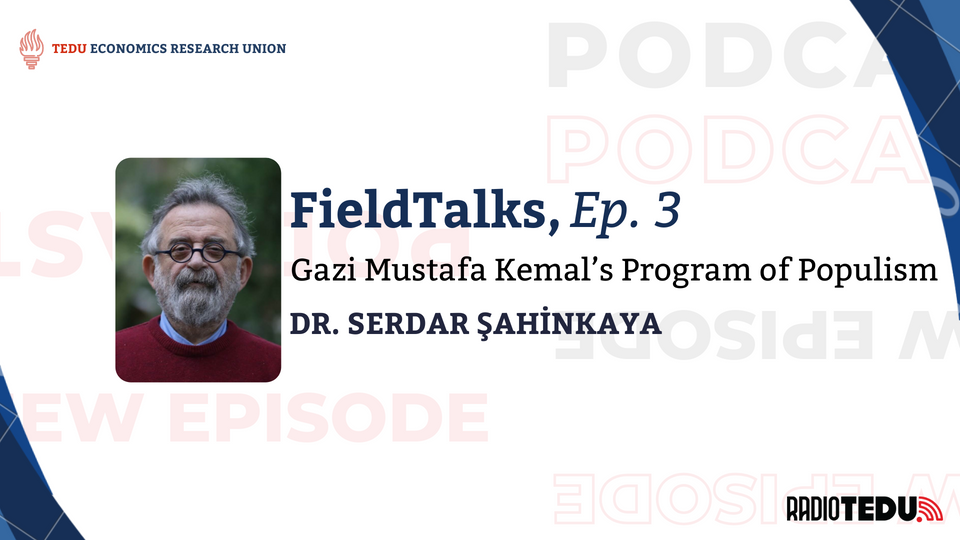
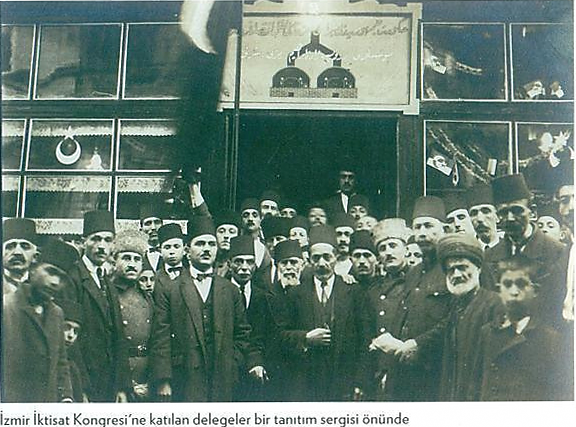
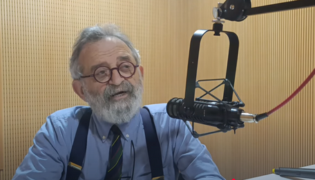
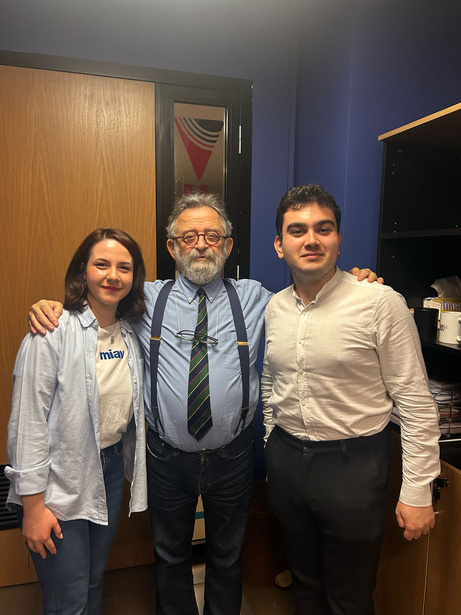
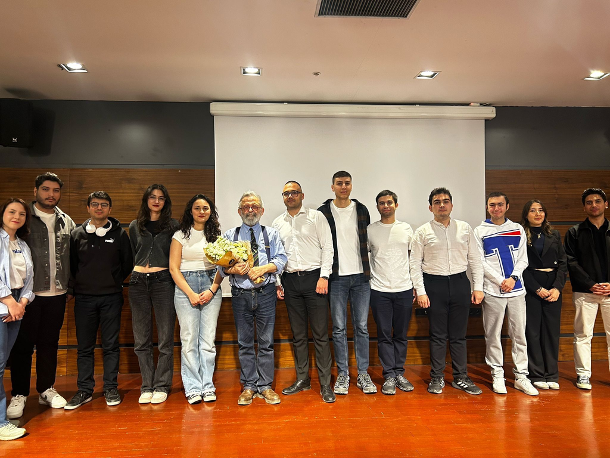

In the third episode of the FieldTalks podcast series on RadioTEDU, Ezgi Eylem Erdoğan and Arda Akgül had a deep conversation with academician and author Dr. Serdar Şahinkaya about the Republic's early development vision, its populist program, and the forgotten Women's Congress. Dr. Şahinkaya, born in İzmir in 1958, is a graduate of Ankara University's Faculty of Political Sciences (Mülkiye) Economics Department, where he taught for 24 years. He retired as an economics expert from the Türkiye Kalkınma Bankası (Development Bank of Türkiye) in 2019 and currently serves as the coordinator of the 21st Century Planning Group, while also writing columns.
We recalled the important events in Türkiye's economic transformation. This program, shaped under the leadership of Mustafa Kemal Atatürk, laid the foundation not only for economic but also for social and cultural transformation.


The Economic Story of a Nation: The Izmir Economic Congress
Dr. Şahinkaya explains that the Economic Congress, held in İzmir from February 17 to March 4, 1923, was proposed by the young Economics Deputy Mahmut Esat Bey and approved by Gazi Mustafa Kemal Paşa, then Speaker of the Grand National Assembly. The congress aimed to define the economic model for the newly established state, which had already been decided as a populist government led by the People's Party. Just five months after the end of the War of Independence, it was deemed crucial to gather insights from all productive and creative forces of the time.
Over 16 days and 36 sessions, the İzmir Economic Congress convened farmers, merchants, industrialists, and workers, ultimately adopting 302 resolutions published as "Our Economic Principles." — Dr. Serdar Şahinkaya
Over 16 days and 36 sessions, the İzmir Economic Congress convened farmers, merchants, industrialists, and workers, ultimately adopting 302 resolutions published as "Our Economic Principles" on March 4, 1923. A month later, Mustafa Kemal Paşa distilled these into the Republican People's Party's famous Nine Principles. The decisions, described by Dr. Şahinkaya as quite progressive for their time, shaped early Republican politics, encouraging a bank-focused development drive that led to the establishment of İş Bankası (1924), later Sümerbank and Etibank, while also advocating workers' rights such as the eight-hour workday, May 1 as Labor Day, and breastfeeding breaks for women.

Evolution and Deviation from the Original Vision
Dr. Şahinkaya traces an erosion of the early-Republic economic vision after the late 1930s. The 1938 Economic State Enterprises Law intensified state-led development, and WWII strained but did not stop progress thanks to Türkiye's neutrality and 1930s industrial capacity. Yet post-1950 governments steadily abandoned public-driven industrialization. The 1960 coup and 1961 Constitution briefly revived the original principles, recovery of economic autonomy, a Constitutional Court, and comprehensive economic planning, anchoring four successive development plans that kept industrialization at the economy's core through the 1970s.
Atatürk's Economic Foresight
Dr. Şahinkaya underscores Atatürk's prescient economic vision, having articulated "Statism" in 1932 and "Guided Economy" in 1935 — concepts later praised by scholars such as Ha-Joon Chang. He argues that the notion of "development" has been hollowed out over the past 45 years, reduced to import-driven growth detached from social welfare. Since the 1980s, comprehensive national planning has given way to corporate-style "strategic plans," prompting his call for a renewed, genuinely developmental strategy to "re-make this geography a homeland."

The Women's Congress
The Women's Congress, held in Izmir on February 2, 1923, and attended and supported by Mustafa Kemal Pasha, was groundbreaking in a society where women were almost invisible. Mustafa Kemal, who said, "All the works you see in the world belong to women" and addressed both genders equally as "Efendiler," signaled that the coming Republic era would also be a women's revolution by claiming that women would be equal to men in science and knowledge. This progressive spirit continued when women gained the right to vote in local elections in 1930 and the right to vote and stand as candidates in parliament in 1934.
Advice for the Next Generation
Dr. Şahinkaya encourages aspiring economists to read widely, especially in economic history, sociology, and law, while taking handwritten notes and keeping a journal to sharpen their thinking. He advocates for primary sources, such as the 1934 Industrial Plan, and warns against superficial, numbers-only analysis. Rigorous quantitative work must be balanced with human context. Staying informed through quality journalism, developing original thinking rather than relying on AI shortcuts, and proudly identifying as an "economist" are key pieces of advice.
He also recommends taking graduate studies at a variety of institutions to gain diverse perspectives, first exploring the full spectrum of economics and then specializing deeply in a chosen area.
Dr. Şahinkaya concludes with a hopeful message for the youth, emphasizing the importance of spending years as a student wisely through meaningful reading and building strong networks to shape a positive future.


As the TED University Economics Research Union, we'd like to thank dear Dr. Şahinkaya for the precious conversation. Make sure you're subscribed to TED University Economics Research Union's YouTube Channel to be notified of new episodes.